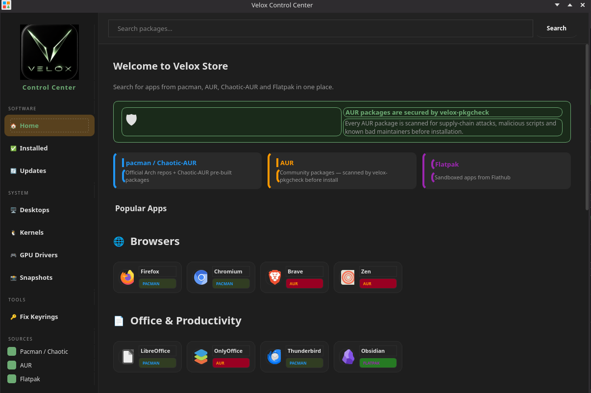
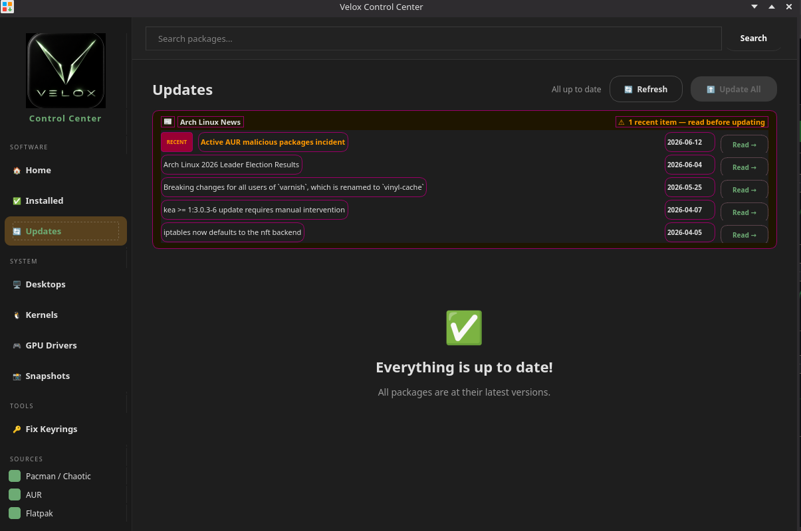
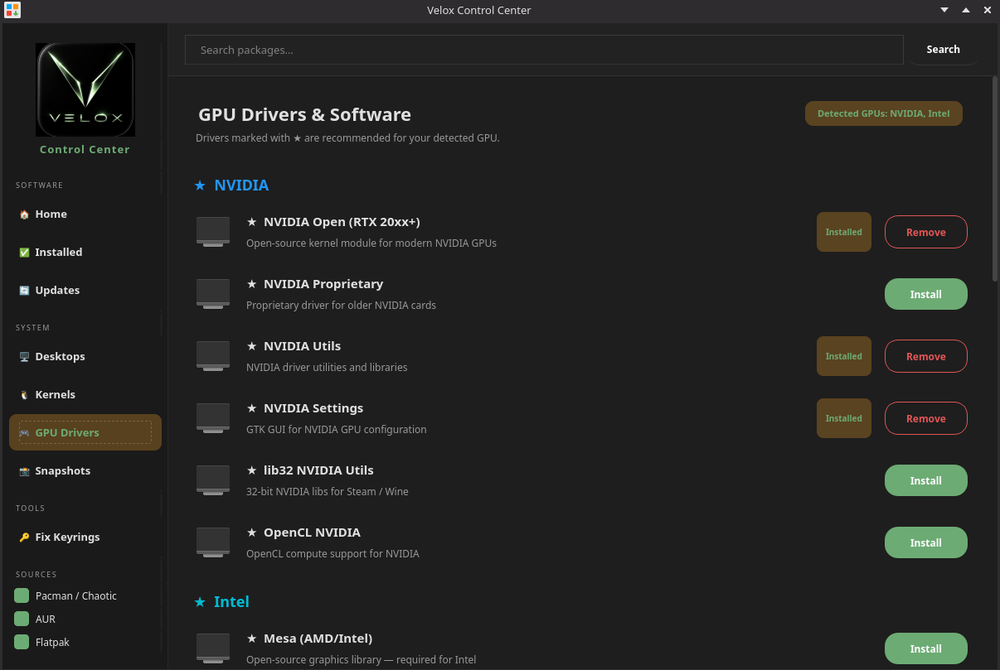

Velox is an Arch-based rolling-release distro built for creators, gamers, and power users — beautiful, fast, and secure right out of the box.
Velox (Latin: swift, fast, rapid) is an Arch-based distribution that gives you the full power of a rolling-release system with a polished installer, a curated software stack, and a custom control center that solves the four most common reasons people give up on Arch.
Three fully-themed desktops — KDE Plasma, Cinnamon, and XFCE — all running Wayland. Choose at install time.
One app for everything — updates, drivers, kernels, AUR installs, snapshots, and more.



Search pacman, Chaotic-AUR, AUR, and Flatpak in one place.
Install NVIDIA, AMD, and Intel drivers with a single click.
Switch between linux-velox, linux-lts, linux-zen, linux-hardened, and linux-rt.
Add GNOME, XFCE, Cinnamon, Hyprland, and more alongside KDE.
Manage Snapper snapshots with a clean GUI — roll back anytime.
pacman + Flatpak in one button, with keyring refresh built in.
These aren't opinions — they're solutions to documented, recurring failures that have appeared in Arch forums and Linux press for years.
archlinux-keyring goes stale, pacman throws invalid or corrupted package (PGP signature) errors and refuses to update entirely. pacman depends on a keyring it doesn't automatically keep fresh.
archlinux-keyring. If it's older than 7 days it refreshes it in the background via pkexec — no user action needed. Update All always refreshes the keyring first, so updates can never fail on expired keys.
librewolf-fix-bin, firefox-patch-bin, and zen-browser-patched-bin — were found to be actively malicious, running cryptocurrency miners and exfiltrating credentials. AUR helpers like paru and yay have no built-in scanning.
velox-pkgcheck before installation. It reviews the PKGBUILD for suspicious patterns, outbound network calls, eval/exec usage, and obfuscated code. A severity rating is shown and you can cancel or proceed.
libfoo.so.6 when your system has libfoo.so.5 silently breaks other software. The ArchWiki explicitly states: "Partial upgrades are unsupported on Arch Linux." Nothing enforces it.
pacman -Syu first — preventing the most common cause of broken Arch installations.
performance on bootThree fully-featured desktops, each tuned with Velox styling from the first boot.
The flagship Velox desktop. KDE Plasma 6 on Wayland with ksmoothdock, Panel Colorizer, and Papirus-Green icon theme.
Familiar traditional layout on a modern Wayland stack. Nemo file manager with green-accented menus and Fluent-Velox-Dark GTK theme throughout.
Lightweight and fast. XFCE panels replaced with Waybar on top and Crystal Dock on the bottom, styled with Velox dark-green colors.
| CPU | 64-bit x86 (2+ cores) |
| RAM | 2 GB |
| Storage | 20 GB |
| GPU | Any GPU with KMS |
| Boot | UEFI or Legacy BIOS |
| CPU | 64-bit x86 (4+ cores) |
| RAM | 8 GB+ |
| Storage | 40 GB+ SSD |
| GPU | AMD / Intel / NVIDIA |
| Boot | UEFI |
From SourceForge below — one ISO, all three desktops.
Use Ventoy or Balena Etcher.
Calamares installer launches automatically.
NVIDIA drivers install automatically if detected. Reboot and log in.
A single ISO with all three desktops — choose at install time.
Hosted on SourceForge.